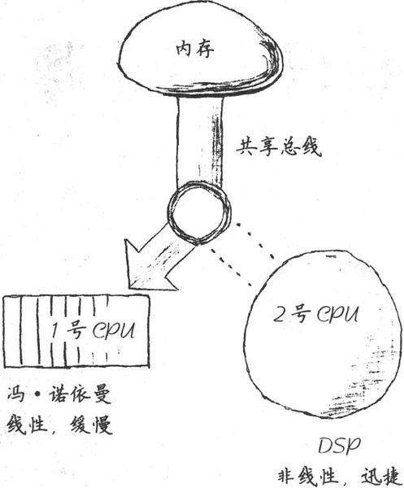
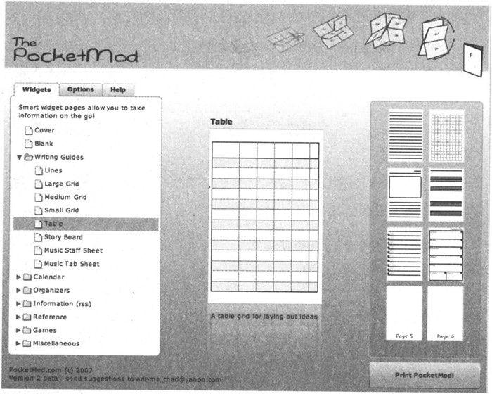
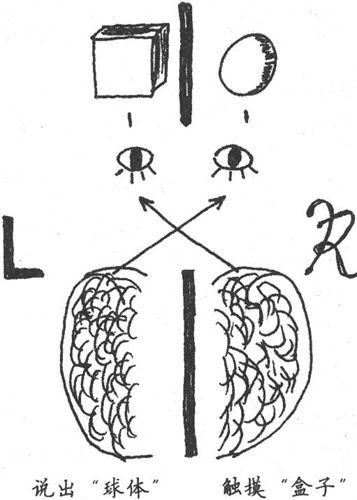
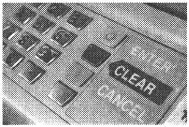
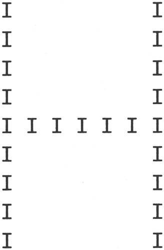

第3章 认识你的大脑
从你出生那一刻起，大脑就开始运转，只有当你站起来向公众演讲时才会停止。
——George Jessel爵士〔1〕
大脑是现有的最强大的计算机。但是，它与我们所熟悉的计算机不完全一样，事实上，它有一些非常奇怪的特点，既可能让你失败也可能助你成功。因此，在本章中，我们将研究一下大脑是如何运转的。
我们将会看到直觉来自何处，研究如何更好地利用它从而使自己更专业，同时分析为什么很多你认为“无所谓”的事情实际上对你的成功至关重要。
因为我们对计算机非常熟悉，所以如果把大脑及其认知过程按照设计一个计算机系统的方式来说明可能更容易理解。
但是，这只是一种比喻。毕竟大脑不是机械设备，不是计算机，它是不可编程的。甚至，你根本无法以完全相同的方式把同一个动作执行两次，而计算机是能做到的。
这不是硬件问题，与肌肉完全无关，这是软件问题。实际上，大脑每次对你的动作进行的设计都会稍有不同，这让高尔夫球选手、棒球投手和板球选手都非常失望〔2〕。
大脑是非常复杂的东西，需要花费非常多的时间来对其进行分析和研究。所以，请记住我只是做了一个类比——但是我希望这会有所帮助。
运用类比，我们可以这样说：大脑的配置为双CPU，单主机总线设计，如图3-1所示。

图3-1 这是你的大脑
我们将在本章和下一章看到，这种双CPU设计暴露了一些问题，同时也提供了一些你原本没有意识到的绝佳机会。
3.1 双CPU模式
1号CPU可能你最熟悉：它主要负责线性、逻辑思维和语言处理。它就像传统的冯诺依曼式的CPU，按步就班地处理指令。1号CPU相对缓慢，使用了大脑中相对较少的一部分资源。
它采用了一个“空闲循环”的程序运行。如果1号CPU没有处理任何其他指令，它就只会生成一个语言的内部流。这就是你大脑中的那个微弱声音〔3〕。
但是，2号CPU则有很大不同。不再是采用线性、按步执行的方式，而更像是一个神奇的数字信号处理器。它就是大脑中的Google：把它想成一个超级正则表达式的搜索引擎，负责处理搜索和模式匹配。像Google一样，它可能会抓住不明显相关的匹配模式。当你“思考”其他事情时，它可以去寻找搜索，然后异步地返回结果集——可能数天之后了。由于2号CPU不做任何语言处理，这意味着它的结果也不是言语可以表达的。
请注意这两个CPU共享通往内存核心的总线，每次只有一个CPU可以访问内存。这意味着如果1号CPU占用总线，2号CPU则无法获取内存执行搜索。同样，如果2号CPU在进行一个高优先级的搜索，1号CPU也无法访问内存。它们互相干扰。
两个CPU提供了L型和R型处理模式。
Two CPUs provide R-mode and L-mode.
这两个CPU对应着大脑中两种不同的处理方式。我们把1号CPU的线性处理风格称为线性模式，或简称L模式。我们把2号CPU的异步、综合处理风格称为富模式，简称R模式。
这两种模式你都需要：R型对直觉、问题解决和创造性非常重要。L型让你细致工作并实现目标。每一种模式都有助于大脑的工作，如果想获得最佳性能，需要两种模式协同工作。下面让我们研究一下这些重要认知模式的细节。
内存和总线竞争
R型对日常工作非常重要：它好比针对长期记忆和“进行中”的想法的搜索和搜索引擎。但正如我所提到的，R型没有做任何语言处理。它可以检索和识别语言元素，但是它本身不能处理语言元素，这是由于L型和R型之间的内存总线冲突所造成的。
全息记忆
记忆是全息存储的，也就是说记忆具有全息图像的某些属性。*
在一个真正的全息图中（使用激光制作），胶卷的每一张都包含整个图像。也就是说，如果你把胶卷分为两半，每一半仍然具有完整的图像，只是保真度或者分辨率低一些。你可以继续无限分割胶卷，越来越小的每一片仍然包含了整个图像的代表。这是因为整个图像被分散存储在整个胶片中，每一个小部分都包含着整体的代表。
科学家们用老鼠研究了这一现象。研究人员首先在一个迷宫里训练一群老鼠，然后用手术刀切除老鼠的一半大脑。（一个孤独的周六晚上，在实验室里还有什么更好的工作可以做吗？）
老鼠仍然可以穿过整个迷宫（虽然想起来有些可怕），只是随着研究人员切除越来越多的大脑，老鼠们越来越无法精确定位。✝
举例来说，你是否有过这样的经历：在刚睡醒时尝试描述一个做过的梦？很多时候，每当你想要用语言描述时，这个清晰、生动的梦境就会从你的记忆中消失。这是因为图像、情感和整体经验都是R型的：你的梦是在R型下产生的。当你尝试把梦讲出来时，就开始争用总线。L型占用了总线，现在你无法获取那些R型记忆了。实际上，它们是无法用言语表达的〔4〕。
人类具有超强的感知能力，其中许多无法有效地用语言表达。例如，你可以立刻认出大量熟悉的人的面孔，无论他们是否改变了发型、穿着，或者肥了10磅，还是过了20年。
但是，尝试描述你最亲密爱人的脸庞，你会觉得有心无力。你如何把这种识别能力用语言表达出来？你能建立一个数据库来存储你所认识人的脸部数据，并依据这些数据来识别这些人吗？不能。这是一种伟大的能力，它不是基于文字的、语言的、L型的。
记忆必须刷新
还记得电影《全面回忆》吗？好吧，如果你记不得了，可能你的记忆也被秘密情报组织查禁了。事实证明，这类精神控制完全不是只出现在科幻小说中，只需施加一种特殊酶，记忆就可以被清除*。
一种位于突触的称为PKM zeta的酶相当于一个微型记忆引擎，它通过改变突触接点结构的某些方面来保持记忆运行。如果大脑某领域的PKM zeta酶因为某种原因停止工作了，你就失去了那部分记忆，无论是什么记忆。
长期以来，人们认为记忆有些类似于闪存，它是通过具有实体暂留性的神经元来录制。事实上，记忆由一个执行循环体主动维护着。即便是在易失性静态RAM中，只要加电数据就可维持。事实上，大脑没有静态RAM，而是具有动态RAM，RAM需要不断刷新，否则数据就会消失。这就是说，甚至连骑自行车也不是想当然可以做的事情。你可能忘掉一切。无论曾经有过多么痛苦或美好的经历，你都可能丢失。
因此，大脑不是软件。软件不会老化，不会退化。但是，大脑必须刷新，必须使用，否则就会丢失记忆。
如果大脑停止运行，它就忘记了一切。
感谢Shawn Harstock的提示和心得。
对于复杂的问题，R型搜索引擎不受你直接意识的控制。这有点类似于你的边缘视觉。边缘视觉对光的敏感度比你的中央视觉更高。这就是为什么你能感觉到某些东西正从你的视野边缘慢慢淡出（比如地平线上的一艘船或是遥远天空中的一颗星星），但是如果你定睛去看它，它就会消失。R型就是意识的“边缘视觉”。
R型不能直接控制。
R-mode isn't directly controllable.
你是否有这样的经历，一个棘手问题（bug、设计问题或一个遗忘很久的乐队名字）的答案突然灵光闪现，可能在你洗澡的时候？或者在某一天你没有思考这个问题的时候？这是因为R型是异步的。它作为后台进程运行，处理过去的输入，努力挖掘你需要的信息。因而它要浏览的信息非常多。
R型在存储输入方面非常卖力。事实上，可能你的每一次经历，不论多么平淡乏味，都会被存储。但是它不一定被索引。大脑把它存储起来（好比存储到硬盘里），但是不会建立一个指向它的指针或者索引〔5〕。
曾经某个清晨，你是否驱车上班，然后突然意识到你记不起刚刚过去的十分钟的驾车过程？大脑认为那些不是非常有用的数据，所以没有费力建立索引。这导致想要回忆那些过程有一点困难。
然而，当你努力解决一个问题时，R型进程会搜索你的所有记忆以寻找解决方案。这包含了所有未被索引的数据（比如你在学校里打瞌睡时听的课）。它们可能真的会派上用场。
在下一章里，我们将研究如何利用这一点，找到特定技术来帮助解决R型的其他问题。不过首先，让我们看一看一个非常重要又非常简单的处理R型异步问题的技术。
谁主管这里？
你可能会认为脑子里的叙述声音受你的控制，是有意识的，是真的你。它不是。实际上，当这些词语在你脑中形成时，背后的想法已经存在多时了。而在用口说出这些词语之前，又已经过了相当长的时间了。
从最初的想法到你明白它不仅有时间延迟，而且大脑中没有思想中心轨迹。各种想法层出不穷，互相竞争，不论何时，只有胜利者才会成为你的意识。我们会在8.2节深入研究这个问题。
3.2 随时（24×7）记录想法
R型至多是不可预测的，你需要为此做好准备。答案和灵感会独立于你的意识活动出现，而且不是总在恰当的时候。当你得到一个价值百万美元的伟大想法时，你可能并不在计算机旁（事实上，就是因为你远离计算机所以才更有可能得到这个伟大的想法，稍后将更多介绍）。
这意味着每周7天每天24小时需要随时准备好记录任何灵感和想法，不论当时在做什么。你可能会尝试以下技术。
钢笔和记事本
我随身携带Fisher Space钢笔和小记事本。这支钢笔非常棒，可以灵活地用于任何场合〔6〕。记事本是从杂货店里买的69美分的便宜货——轻薄，没有螺旋装订，像一个特大号的火柴盒。我可以随身携带。
索引卡片
一些人喜欢在单张卡片上记录信息。这样你可以更容易抛弃那些行不通的想法，把重要的信息贴到你的书桌记事本、公告板、冰箱上，等等。
PDA
可以使用Apple iPod、Touch、Palm OS或者Pocket PC等带有记事本软件或者wiki的设备（参见8.3节）。
语音备忘录
可以使用移动电话、iPod/iPhone或其他能够录音的设备。这项技巧在你长时开车难以做笔记时特别方便〔7〕。一些语音邮件服务现在支持语音转文本（称为可视语音信箱），可以把文本和语音原文件发送给你。这意味着不论你身在何处，你都可以拨打免提语音信箱，给自己留信息，然后把文本复制粘贴到你的待办事项、源代码、博客或者其他地方，非常方便。
Pocket Mod
这款免费的Flash应用可以通过http:www.pocketmod.com访问，它巧妙地使用规则的单页打印小册子。你可以选择单行纸、表格、待办事项清单、五线谱和各种其他模板（参见图3-2）。一张纸和一支迷你高尔夫球场赠送的短铅笔，就可以让你拥有一款非常便宜、一次性的PDA。

图3-2 来自pocketmod.com的一次性袖珍PDA
记事本
对于更大的想法和主意，我随身携带一个Moleskine记事本（如下文所示）。这种记事本用的是份量重、奶油色、未分行的纸张，这更容易激发新点子。因为它让人感觉比廉价的一次性记事本更耐用，我注意到人们总在想法相对成熟之后才会记录下来，这样就不会过早地将它用完。这太糟糕了，因此我总是保证自己随时准备一个备份的Moleskine。这就很不一样了。
重要的是，使用一些你总是随身携带的东西。不论是纸、手机、MP3播放器还是PDA，这都没有关系，只要你随时可用就行。
诀窍8
捕获所有的想法以从中获益更多。
如果你不记录这些伟大的想法，你就不会意识到拥有过它们。
Moleskine记事本
最近，Moleskine （http://www.moleskine.com）制作了一款非常流行的记事本。有多种尺寸和样式、分行的或者不分行的、厚的或者薄的纸张。这些记事本带有某种神秘气息，一直被著名的艺术家和作家所偏好，有超过200年的历史，其使用者包括梵高、毕加索、海明威，也包括我本人。
Moleskin的制造商把它称为“思想和感情的蓄水池，发现和认识的动力电池，人们总是可以利用它的能量”。
我喜欢把它当作我的外部皮层——便宜的外部存储容器，存放那些不适合装在大脑里的东西，只花10美元，值得。
上面的结论是对的——一旦开始记录这些想法，你就会得到更多。如果不使用这种方法，大脑就会停止向你提供东西。但是如果你开始使用它，大脑就会非常乐意给你提供比你想要的更多的东西。
每个人都有好点子。
Everyone has good ideas.
每个人——不论教育背景、经济状况如何，不论日常工作是什么，不论年龄大小——都有好想法。但是在这么多拥有好想法的人里面，只有少数人在努力跟踪它们。而其中，又只有更少数人会努力付诸行动。随后，仅有少之又少的人有能力将好想法成功实现〔8〕。要想达到图3-3中金字塔的最顶层，必须跟踪好想法，这是最基本的要求。
图3-3 每个人都有好点子，但很少有人付诸行动
当然，这还不够。仅仅捕获想法只是第一步，然后需要处理想法，我们可以用一些特殊的方式使我们的行为更有效。我们会在后面深入讨论（参见8.3节）。
准备好做记录的工具，并随身携带……
3.3 L型和R型的特征
当然，除了R型的不可预测性之外，L型和R型之间还有很多区别。
如果你曾经说：“我犹豫不决。”（I'm of two minds about that）也许纯粹字面意思比你的想法更正确〔9〕。大脑实际上有许多不同的处理模式。每个模式都有其独特之处，当你最需要它的时候它会帮助你。
最快的处理方式是甚至没有到达大脑皮层的肌肉记忆类反应〔10〕。钢琴演奏家在快节奏的章节演奏中没有时间思考每一个音符。参与的肌肉基本在无意识或无指令的状态下自己完成了整个演奏。
同样，本能的急刹车或者躲避自行车的过程都没有CPU参与，这些全部都在“外设”中完成。由于飞速的键盘输入和类似的物理技能对我们程序员来说没有多少意义，所以我不会谈论太多这些无CPU的模式和反应。
当然，我们要谈论很多R型和L型的思维方式和响应，并看看它们能为我们做什么。
在20世纪70年代，心理生物学家Roger W. Sperry开创了著名的“裂脑”（split-brain）研究，从中发现了左右半球处理信息的方式截然不同。（为了增强其可信性，我想提一点：他因这项研究获得了1981年的诺贝尔奖。）
首先，做个小实验。坐下，抬起右脚顺时针旋转。与此同时，用右手在空中写数字6。
请注意，你的右脚会改变旋转方向。这就是大脑关联的结果。剪断这种关联，就会发生两件事：你会有一些非常奇怪的行为，然后研究人员则有机会深入研究大脑〔11〕。
Sperry的研究中选取的患者都做过切断胼胝体手术，这种手术导致他们的左右半球再也无法沟通和协调。现在关联切断了。这样一来，观察哪个半球独立负责哪些具体行为和能力就相对容易些。
例如在一项实验中，研究人员在同一时刻为这些裂脑患者的两只眼睛展示了不同的图片，如果要求他们说出看到的图像，他们会报告右眼看到的画面（使用了负责语言的左半球），但是如果要求他们触摸图片以确定图像，他们就会报告左眼看到的画面（这关联到非语言的右半球）。图3-4揭示了这一现象。

图3-4 裂脑客体显示了感观的差异
Sperry最早指出了脑半球各自不同的功能，在现代词汇中首次引入了词条左半球和右半球。事实上，正如下文解释的，这种说法不完全正确，所以我把这些模式称为线性模式（L型）和富模式（R型）。
Sperry、Jerre Levy和后来的研究人员确定了每个模式所关联的功能〔12〕。
左脑与右脑
本质上不存在左脑思维和右脑思维这样的东西，大脑的各种脑叶和不同层次的结构体之间的协作分布得非常均匀，不论是古老的爬虫类脑部〔13〕，还是最新发现的大脑新皮质，它们之间都有协作。但是尽管有这样的协作，我们仍然拥有两种不同的认知风格——CPU 1号和CPU 2号。
这两种不同的认知风格有很多名字。在流行心理词典中，它们被称为左脑思维和右脑思维。但是，这种表达不太恰当，因为神经细胞的行为比这种划分更加复杂，然后就诞生了很多其他名词。
Guy Claxton在Hare Brain, Tortoise Mind: How Intelligence Increases When You Think Less [Cla00]一书中把它们称为d模式和潜意识。d模式的“d”代表“故意的”。潜意识模式则强调了2号CPU是在无意识下运行的。
Dan Pink在A Whole New Mind: Moving from the Information Age to the Conceptual Age [Pin05]一书中将它们称作1-directed和-directed。
Betty Edwards博士在Drawing on the Right Side of the Brain [Edw01]一书中首次打破了左右脑的区分模式，将它们称为L模式和R模式。
为了明确每种认知模式的本质，我在本书中使用线性模式和富模式，简写为L型和R型。
3.3.1 L型处理特点
L型处理令人感到舒适、熟悉而轻松。L型提供以下9种能力。
语言能力
使用词语来命名、描述和定义。
分析能力
有理有节分析事情。
符号能力
用符号表示事物。
抽象能力
抽取小部分信息（本质），并用其表示事物整体。
时间能力
遵时循序。
推理能力
基于理智和事实得到结论。
数字能力
使用数字计数。
逻辑能力
基于逻辑（定理、明确的论点）得出结论。
线性思维能力
按照关联、依序推演问题和思考，经常会得出收敛性结论。
这显然是白领们、信息工作者和工程师们最渴望的本领。上学时测试的就是这些能力，工作中使用的也是这些，并且它们非常符合我们到目前为止都很欣赏的计算机系统。
但是，毕加索〔14〕曾说过一句著名的话：“计算机一无是处，它们只能给你答案。”发表如此异端的言论，他有何依据呢？
如果“答案”是无用的，那么这就意味着问题更重要。事实上，那种对事物截然相反的看法正是R型思维的一个标志。对于我们这些L型思维根深蒂固的人来说，R型特点听起来有一些奇怪、不协调甚至非常不舒服。
3.3.2 R型处理特点
相比L型，R型提供如图3-5所示的能力。正如我们将马上看到的，这些都是非常重要的，但是你会立刻注意到直觉（专家的标志）就在其中。
图3-5 R型属性
R型是非语言的，它可以获取语言但是不能创建语言。它喜欢综合学习：集合事物形成整体。它总是如实地反应事物，从这一点来说，它非常具体实在，至少目前是。它使用类比来评价事物之间的关系。它喜欢听好听的，而且不愿意为守时而费心。它不受理性的约束，因为它不需要基于原因或者已知事实来处理输入——因而，它完全愿意暂时不作任何判断。
R型绝对是注重整体的，总是希望一次就能看到事物整体，感知整体的模式和结构。它具有空间性，喜欢弄清楚事物之间的空间关系，部分如何形成整体。最重要的是，它是直觉性的、跳越性的思维，通常基于不完整的模式、直觉、感觉或者视觉影像来做判断。
但是总的来说，这种模式令人感到不那么舒服。这些特点似乎更适合艺术家和其他奇才（weirdo）。而不是工程师，也不是我们〔15〕。
那么“非理性”呢？那近乎于无理取闹。许多程序员宁可被以谋杀罪起诉也不愿意被指责做事完全不理性。
但是很多站得住脚的思维过程都不是理性的，包括直觉，可这都没问题。你结婚了吗？如果已经结了，那么当时你是很理性地作出这个决定吗？也就是说，你是不是列举了所有的优缺点，或是采用了决定树或矩阵来通过逻辑的、理智的方式做出的决定？我猜没有。
“非理性”没有什么不对，思维过程是非理性或者不可重复的并不意味着它是不科学的、不负责任的、不合适的。
很多能力就这么浪费了。
Power is going to waste.
对德雷福斯模型的讨论是否让你觉得不舒服呢，因为它不是可证明的事件风格理论？如果是，那这就是你L型的偏见表现。
我们没有使用的R型处理方式其实很有价值，很多能力就这么浪费了。我不知道你是什么情况，坦率地说，我能够使用我能得到的全部的大脑能力。R型有很多有趣、未充分挖掘的能力。
3.3.3 为何要强调R型
我们需要更多地使用R型，因为R型能够提供直觉，这是成为一名专家所迫切需要的。没有它，我们就不能成为专家。德雷福斯模型强调专家对隐性知识的依赖，这也属于R型的范畴。专家依赖观察和区分模式，这里也有模式匹配。
R型的类比和整体思考方式对软件架构和设计非常有价值，好的设计就是由这些组成的。
你综合学习的频率可能已经比你想象的要多。面对复杂的设计问题或者难以修改的bug，优秀的程序员通常都有冲动去编码和构建，由此可以从中学习。这就是R型的综合，而不是L型的分析。这就是为什么我们喜欢原型和独立的单元测试。它们给我们综合学习的机会——通过构建。
事实上，综合是一项非常强大的学习技术，以至于麻省理工学院媒体实验室的尼葛洛庞蒂〔16〕在Don't Dissect the Frog, Build It [Neg94]中建议，真正想要了解一只青蛙，传统的解剖不是办法，更好的方式是构造一只青蛙。
也就是说，要求学生构造一个具有青蛙特征的生物。这是一种伟大的方式，可以真正了解到，什么使青蛙成之为青蛙，以及青蛙如何适应其特定环境。这是一个综合学习的绝佳例子。
诀窍9
综合学习与分析学习并重。
但是，使用综合作为学习手段只是一个开始。事实上，你可以做很多事情来提高大脑解决问题的能力，比如适当同时利用两种思维模式——包括一些简单的技巧，如一边打电话聊天一边想着涂鸦，而同时随手把玩小东西，以及一些真正有趣、异乎寻常的技巧。
让我们看一看这些技术，来了解该如何正确使用你的大脑〔17〕。但是首先，让我稍微跑个题来看看这里面临的一个更重要的话题，探讨一下为什么R型比你想象的还重要。
3.4 R型的崛起
正如你在查看L型和R型特征时所感觉到的，我们有一点倾向于L型思维方式和相关的活动，同时我们可能倾向于摒弃R型思维，认为那是弱者的领域。R型就像一个古怪的遗留物、退化的附属品，来自于某个久远的年代，在那时人类相信地球是平面，雷电是不可见的诸神战争的结果。
没错，正是L型的思维方式区分了人类和普通动物。它带领人类走出森林和热带雨林，走进村庄和城镇，从田间地头走入工厂车间，最终坐在办公桌后面使用起了Microsoft Word。
L型是必要的，但仅有它是不够的。
L-mode is necessary but not sufficient.
尽管L型思维方式的分析和语言能力带我们走了这么远，但是我们已经因为过度依赖L型而失去了一些R型的重要能力。为了前进，为了推进人类发展的下一次革命，我们需要学习将大大忽略的R型与L型重新集成。
现在，你可能正担心我会让你触碰自己的童心或者其他一些看上去微不足道的事情，在你还没有厌恶地把这本书扔掉之前，让我来告诉你罗伯特·卢兹〔18〕的故事。
卢兹先生曾经是一名海军陆战队队员和飞行员。《纽约时报》曾经登载过他的照片，从此照片看他是一个一本正经、方下巴、平头的家伙。当我编写本书时，他担任通用汽车北美公司的主席。这可是一项相当严肃的工作。
然而，在接受《时代》周刊的采访时，卢兹先生是这样谈论通用汽车的未来发展方向的：“它更多是右脑思维……我发觉我们在做艺术行业。艺术、娱乐和移动雕塑，巧合的是，也同时提供运输服务。”
他没有谈论设计或特征。弹出式杯座和iPod连接器，这些曾经很新颖的设计如今每辆车都有。相反，他在谈论美学。
但是，谈论这个话题的不是高高在上的艺术家或者拥护某些疯狂理论的研究人员，而是美国第三大公司的老板〔19〕。卢兹认为关注美学是那个历史点上正确的行动方针。
Dan Pink在他的畅销书A Whole New Mind: Moving from the Information Age to the Conceptual Age[Pin05]中同意这种看法。Dan有力地证明了，基于经济和社会的发展，这些艺术的、美学的R型属性不再专属于那些想亲手制作贺卡的玛莎·斯图尔特〔20〕式的人。相反，那些平凡的、悠久的主流业务绝对也需要这些属性。
3.4.1 设计胜于功能
下面举个例子，来看看商品化的影响。假设你是一个大型零售商，需要卖一些日用品，例如洁厕刷。你无法在价钱上竞争，任何人都可以用不到一美分的钱买到廉价的洁厕刷。那么该如何让你的产品与众不同呢？
商品化意味着美学品味的竞争。
Commoditization means you compete on aesthetics.
美国大型零售商特吉特百货公司（Target）售卖的洁厕刷是由著名的设计师、建筑师Michael Graves设计的，他们将此作为卖点，从而解决了这个问题。既然无法在价格上有竞争力，你必须在美学品味上赢得竞争。
让我们放下洁厕刷，来看看更接近心灵和耳朵的东西：iPod。领先市场的iPod所有功能都比其他同类产品更优秀吗？或者它只是设计得更好、更符合审美情趣呢？
咱们从包装本身说起。iPod的包装不是很繁琐，只是说明了iPod可以容纳多少歌曲和视频，有一张漂亮的图片，简洁优雅。
相比之下，在YouTube网站上有一段恶搞的视频，展示了如果是微软设计的iPod会是什么样子，极尽嘲讽之能事：包装盒非常复杂，上面密密麻麻写满了文字、商标品牌、图标、免责声明，等等。
包装盒里装有多页折叠的法律条款、第三方的声明，用大号字体标明内存为30G字节model*。（星号表示1G字节不完全等同于10亿字节，真正能使用的内存空间视情况而定，总之，你无法使用所有的空间。我猜包装盒也会提到如果你下载盗版MP3，你就会万劫不复。噢，我跑题了……）
请注意重要的一点：iPod说的是它能容纳多少首歌曲。
说歌曲，而不是说字节。
It's about the songs, not gigabytes.
而这个微软风格的恶搞产品（和很多真正的同类产品）说的则是它可以容纳多少G字节。顾客并不关心字节数，只有我们这些geek关心。人们真正想知道的是它可以存放多少首歌曲或者多少相片或视频〔21〕。
iPod设计出众、极具吸引力，从包装到用户界面都是这样。事实上，这不仅仅是裹以糖衣的营销方式，而且具有吸引力的事物的确可以表现得更好。
3.4.2 吸引力更有效
一些研究〔22〕都表明具有吸引力的用户界面要比不具吸引力的（或者使用科学术语——丑陋的）界面更易于使用。
日本的研究人员针对银行ATM界面做了一项研究，发现令人愉悦的美观按钮布局要比丑陋的布局更容易使用，即使它们的功能和工作流程是相同的。

考虑到也许这里有文化偏见的影响，这些研究人员在以色列做了相同的实验。实验结果更加明显，尽管这是在一个完全不同的文化中。但是，怎么可能呢？审美因素仅仅是一种情感反应，不可能影响认知过程。它可以吗？
是的，它可以。事实上，另外的研究〔23〕证实了这一点：积极的情感对学习和创造性思维非常关键。处于“高兴”的状态可以扩展你的思维过程，激活更多的大脑物质。
甚至是公司的商标也能影响你的认知。美国杜克大学〔24〕的一项研究表明，短暂接触一下苹果公司的商标会使人更具创造力。一旦你接受了某种固化形象，你的行为就会受到与这种固化形象相关联的行为的影响。在本例中，苹果的商标，与叛逆、创新和创造力相关，这会促使你勇于创新，富有创造力。
反之同样成立。当你害怕或者生气时（充满了消极的情绪），你的大脑开始停止提供多余的资源，并为反抗或者逃跑做准备（我们将在7.5节讨论更多内容）。因此，处于遭到明显破坏的环境中的事物也可能会导致更大灾难。我们已经看到破窗理论（Broken Window Theory）（参见《程序员修炼之道》[HT00]）在现实中存在若干年了。已知的问题（比如代码的bug、糟糕的组织流程、欠缺的用户界面或混乱的管理）如果不加以改正会产生病毒一样的影响，最终造成更大损害。
禁锢扼杀脑细胞
你可能一直听说，人在出生时拥有一定数量的脑细胞，这就是你所有的家当。脑细胞可能会死亡，但无法再生新的。酒精和年龄增长会杀死脑细胞，这让人一想到老年生活就顿感沮丧，因为与出生时相比失去了太多脑细胞。
幸运的是，伊丽莎白·高尔德教授〔25〕不这样想。一项发现使这个领域沸腾了，她发现了神经形成——在成年时期，新脑细胞会不断再生。但是有趣的是，之前的研究人员之所以从未发现神经形成，竟然要归因于他们的研究对象所处的环境。
如果你是困在笼子里的实验室动物，你永远都不会产生新的脑细胞。
如果你是困在斗室里的程序员，你永远都不会产生新的脑细胞。
相反，如果处于一个丰富的环境中，里面充满了需要学习、观察和交互的事物，你就会产生大量新脑细胞和新的神经联系。
几十年来，科学家被人造环境（无菌实验室笼子）误导了，因为人造环境只会产生人造数据，这再次证明情境是关键。你的工作环境需要提供丰富的感观机会，否则它真的会损坏大脑。
美学可以改变这些，不论是用户界面、代码和注释的布局，还是变量名的选择和桌面的整理，还是别的任何方面。
诀窍10
争取好的设计，它真的很有效。
但是我们已经趟入了浑水中：什么使事物变得有吸引力或者索然无味？如何才能把事物设计得美？而这又到底意味着什么呢？
20世纪最著名的建筑设计师之一路易·康〔26〕，很好地解释了美和设计之间的关系：“设计并不是创造美，美来自于选择、共鸣、同化和爱。”
美来自于选择。
Beauty emerges from selection.
康解释了美来自于选择。也就是说，艺术不是来自于创造本身，而是来自于选择，从几乎无限的可选项中进行选择。
音乐家有几乎无限的选择方式来组合不同的乐器、音符、节奏和难以定义却易于感知的“手感”（groove）。画家可以在2400万种可识别的颜色中选择。作家可以使用整个牛津英语词典（共20卷，30万主条目）来选择最贴切的词语。
创造来自于选择和组装，它要选择最合适的部件，并将它们组装成最合适的表现形式，这就是创作。选择（知道选择什么和在什么情境下选择）来自于模式匹配，我们将会在后面回到这个主题。
3.5 R型看森林，L型看树木
模式匹配是专家表现的一项关键能力。它帮助专家缩小选择范围，把精力集中到与问题相关的事物上。
我们感兴趣的绝大多数模式匹配都缺少R型参与。但是L型和R型都有处理模式匹配的各自方法，最终两者你都需要。
考虑下图〔27〕：

这里我们用字母I组成了一个字母H，这种模式称为层次字符。心理学家把这种图片快速展现给实验对象，要求每次只用一只眼睛看，并要求他们识别出大字和小字。
大脑的不同半球处理这种识别问题的方式各不相同。一个半球擅长识别局部（小字符），而另一个则擅长识别全局（大字符）。
实验对象在使用左眼时能良好地回答有关全局模式的问题（主要使用了R型）。同样他们使用右眼能很好地回答有关局部的问题（主要使用了L型）。但是如果相反的话，结果就很糟糕。这里似乎有很明显的专长区分。
这项实验说明了一个事实：如果你想发现全局、整体的模式，你需要R型；如果你需要分析部分和细节，你需要L型。对于我们大多数人来说，这种层次的专长就是这样区别的。R型看森林，L型看树木。
但是对于极个别的幸运儿，脑半球的区别不是这么明显。特别是，数学天才没有这些差异，他们的大脑更加协作〔28〕。当他们观察I字母或者H字母时，两边半球会更均衡地参与其中。
如果你恰巧不是一个数学天才，那么我们需要研究一下促使R型和L型协作的其他方法：更好地集成L型和R型处理方式。我们将在下一章看看如何做。
3.6 DIY脑部手术和神经可塑性
你可以给大脑重新连线。想要在某些领域得到更多能力？你可以重塑自己。你可以重新改造大脑的各个领域来执行不同功能。你可以把更多的神经元和内部连接用于特定技能。你可以根据自己的需要构建大脑。
先别太兴奋，请把手术刀和钳子收好，有更简单的方法来做脑部手术。我们不需要工具。
直到最近，人们还相信大脑的功能和内部“关联”从我们一出生就固定了。也就是说，大脑的各个局部区域根据确定的规则执行相应的功能。一部分皮层处理视觉输入，另一部分处理味觉，等等。这也意味着你所具有的做事能力和智力在出生时基本就确定了，没有另外的训练或者开发可以使你超越这个极限。
幸运的是，对我们和以后的人们来说这是错误的。
实际上，人类大脑非常具有可塑性，研究人员已经能够教会盲人通过舌头“看”东西〔29〕。他们利用一个摄录机芯片，将芯片的输出以16×16像素的形式连接到患者的舌头上。他的大脑线路重新组织，可以通过舌头上的神经输入来执行视觉处理，结果此人竟然能够在停车场内自如驾驶！同时请注意输入设备没有特别高的分辨率，只有大约256像素。但是大脑自行填补进了足够的细节，即使这种低分辨率的输入也足够了。
诀窍11
重新连线大脑，坚信这一点并不断实践。
神经可塑性（大脑的可塑本质）也意味着你能够学习的最大容量或者你可以获得的技能数量不是固定的。没有上限，只要你相信这一点。根据斯坦福大学研究心理学家、Mindset: The New Psychology of Success [Dwe08]的作者卡罗尔·德韦克的说法，那些不相信自己能增长智力的学生的确做不到。而那些相信自己大脑可塑性的学生则能够很容易提高能力。
不论是哪种情况，你如何认识大脑的能力直接影响了大脑内部的“组织”。只要想你的大脑有更多学习能力，就会是这样。
这是一个自己动手的DIY脑部手术。
思想使然。
Thinking makes it so.
脑皮层竞争
不是只有信念有助于重组大脑，其实在大脑中也存在竞争——争夺脑皮层地盘。
你持续使用和实践的技能会逐渐占据统治地位，这样一来，大脑里就会有更多的部位被关联起来。
同时，较少使用的技能会失去阵地。“不使用就会失去”，这句话用在这里可谓恰如其分，因为大脑会把更多的资源用于你做得最多的事情。
可能这就是音乐家不断练习音阶的原因，这类似于刷新动态RAM。想做一名更好的程序员吗？那就多编码，深思熟虑，专注实践。想学习一门外语吗？那就投入进去，不停地说，用它思考。大脑会很快意识到并调整自己为这种新用途提供更多方便。
3.7 如何更上一层楼
在本章中，我们研究了大脑的特征，包括L型和R型认知过程，以及如何通过实践重构大脑。你应该已经意识到R型尚未充分使用。
那么如果R型如此了不起（或者说至少在目前如此必要），怎么做才能让自己体验更多R型的处理方式呢？怎么做才能训练R型并更好地协调L型和R型呢？
我们会在下一章看一看如何更好地训练和协调。
实践单元
□列一张清单，写下你喜欢的和令你失望的软件。美学因素在你的选择中起了多大作用？
□考虑工作和生活的哪些方面使用L型，哪些方面使用R型。你觉得它们均衡吗？如果不是，你又会怎么做？
□在桌上放一个便笺本（还有车里、电脑旁和床边），使用它。
□另外，随身携带可以24x7全天候做笔记的东西（可以是纸、笔或者其他）。
试一试
□有意识地努力学习一种新事物，通过综合而不是分析。
□尝试不用键盘和显示器来设计下一个软件（我们会在本书后面详细讨论）。
注 释
〔1〕 英格兰法学家，首位犹太裔英格兰及威尔士副总检察长。
〔2〕 参见A Central Source of Movement Variability [CAS06]。
〔3〕 希望你刚刚听到了这个声音。
〔4〕 参见Verbal Overshadowing of Visual Memories; Some Things Are Better Left Unsaid [SES90]。
〔5〕 当然，从技术上讲，不存在索引，因此它更像是位于根据降序激活能排列的很长的散列桶的末尾。但从比喻的角度来说，只需要把它当作索引。
〔6〕 朋友们也推荐Zebra T3系列，参见http://www.jetpens.com。
〔7〕 请使用符合当地法律的免提设备
〔8〕 如果你对此表示怀疑，那就问问风险资本家。
〔9〕 “two minds”可以理解为两个脑半球。——译者注
〔10〕 皮层（cortex），来自拉丁语，本意是树皮，是大脑灰质的外层，对主动思维至关重要。
〔11〕 为治疗癫痫病患者的经常痉挛，脑科医生切断了这些患者的胼胝体，他们成为大脑被一分为二的“裂脑人”。Sperry则邀请这些人进行“裂脑人”实验。——编者注
〔12〕 参见The New Drawing on the Right Side of the Brain [Edw01]。
〔13〕 脑干位于头颅的底部，自脊椎延伸而出。人脑这一部分的功能是人类和较低等动物（蜥蜴、鳄鱼）所共有的，所以脑干又被称为爬虫类脑部。
〔14〕 巴勃罗·毕加索（1881—1973），20世纪现代艺术的主要代表人物之一，是当代西方最有创造性和影响最深远的艺术家。——编者注
〔15〕 它们甚至无法衡量。HR不能估量或奖励这些技能，至少不能像对待L型技能一样容易。
〔16〕 尼古拉斯·尼葛洛庞蒂，麻省理工学院媒体实验室创始人，100美元笔记本计划发起人。——编者注
〔17〕 put you in your right mind，双关，right mind既可以解释成右脑，也可以解释成正确的含义。——译者注
〔18〕 罗伯特·卢兹（Robert A.Lutz），通用汽车副总裁兼产品开发部部长。——编者注
〔19〕 当时是2006年，然而汽车业依然举步维艰。
〔20〕 玛莎·斯图尔特是一个传奇，她创办了玛莎·斯图尔特家庭用品公司，曾担任公司的CEO和创意总监。她是家政领域的女皇，全美最具影响力的女性之一，其身后是无数以追求生活品质而自我标榜的如痴如醉的拥趸。——编者注
〔21〕 据传，这段恶搞视频实际上是微软内部的一个设计小组制作的，可能是为了发泄他们对自己在工作中无法大展手脚的不满。
〔22〕 参见Emotional Design: Why We Love （or Hate） Everyday Things [Nor04], Apparent Usability vs.Inherent Usability: Experimental Analysis on the Determinants of the Apparent Usability [KK95],和Aesthetics and Apparent Usability: Empirically Assessing Cultural and Methodological Issues [Tra97]。
〔23〕 参见A Neuropsychological Theory of Positive Affect and Its Influence on Cognition [AIT99]。
〔24〕 参见Automatic Effects of Brand Exposure on Motivated Behavior: How Apple Makes You "Think Different" [FCF07]。
〔25〕 伊丽莎白·高尔德（Elizabeth Gould），普林斯顿大学的神经科学家。——编者注
〔26〕 路易·康（Louis Kahn），美国现代建筑大师，被崇奉为一代“建筑诗哲”。——编者注
〔27〕 感谢June Kim的贡献。
〔28〕 参见Interhemispheric Interaction During Global/Local Processing in Mathematically Gifted Adolescents, Average Ability Youth and College Students [SO04]。
〔29〕 参见The Brain That Changes Itself: Stories of Personal Triumph from the Frontiers of Brain Science [Doi07]。
* 参见Hare Brain, Tortoise Mind: How Intelligence Increases When You Think Less[Cla00]。
✝ 参见hufflebrain: The Quest for the Hologramic Mind [Pie81]。
* http://pressesc.com/news/1088/16082007/memories-can-be-eased-scientists-find